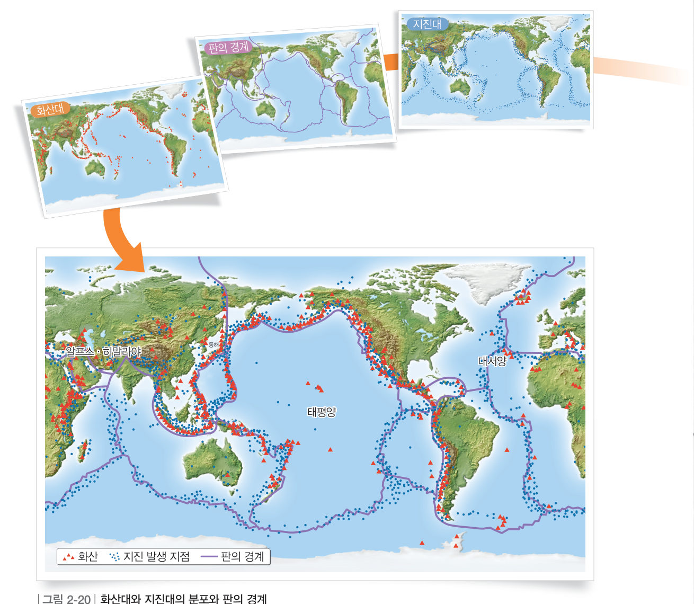

가속도 센서 MPU-6050으로 나만의 지진계를 만들자. 책상을 두드려 작은 ‘지진’을 일으키고, 진앙(두드린 곳)까지의 거리와 지진의 세기를 바꾸어 지진계에 기록되는 흔들림을 비교해 보자.
준비물 아두이노 UNO, USB 케이블, MPU-6050 가속도·자이로 센서 모듈(GY-521), 점퍼선 4개, 양면테이프, 쇠구슬(또는 구슬), 30 cm 자, 줄자, 긴 책상, 노트북(크롬)
| 부품 | 부품 핀 | 아두이노 핀 |
|---|---|---|
| MPU-6050 (GY-521) | VCC | 5V |
| GND | GND | |
| SCL | A5 | |
| SDA | A4 |
코드를 불러오는 중…
| 실험 Ⅰ 거리 | 10 cm | 30 cm | 50 cm | 70 cm |
|---|---|---|---|---|
| 평균 최대 흔들림(mg) |
| 평가 항목 | 스스로 평가 |
|---|---|
| 센서를 바르게 연결하고 변인을 통제하여 흔들림을 측정했다. | |
| 측정 결과를 그래프로 나타내고 지진 피해·조기 경보와 연결해 설명했다. | |
| 모둠원과 역할을 나누어 협력했다. |